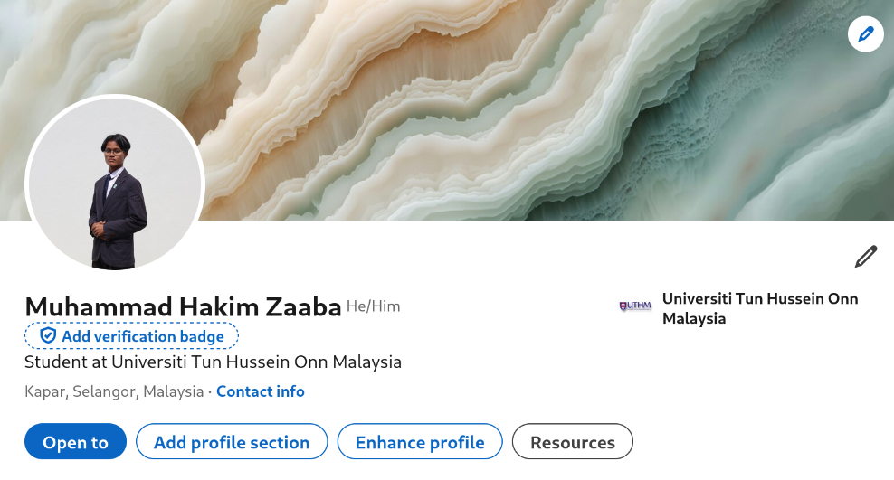

This page presents my professional job search profile created for internship applications.
I created and completed my LinkedIn profile as part of my professional preparation for internship applications. The profile includes my education, technical skills, project experience, and career interest in infrastructure, systems, and cloud-related roles.

Screenshot of my LinkedIn profile showing my education, skills, and project background.